From one line to a 3D cube
You will draw a line, then a shape made of points and edges, then a real 3D cube on a flat screen. Everything after this lesson, up to a small wireframe game, is built from these three ideas.
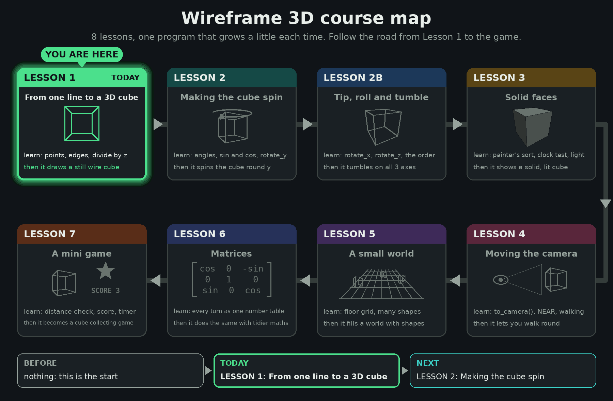
Before: nothing. This is the first stop.
Today: draw a line, then a shape made of points and edges, then a 3D wire cube that stays still.
Next: Lesson 2, Making the cube spin.
Everything after today is built on this lesson's three ideas: points, edges and dividing by z. Lessons 2 to 4 make the cube turn, go solid and let you walk round it; Lessons 5 to 7 fill a small world with shapes and turn it into a game.
Lesson plan
Who it's for: someone who can write basic Python (variables, lists, for loops, functions) and has never done graphics. Needs: Python 3 and pip install pygame-ce.
By the end, the learner can:
- Explain how screen pixels are numbered, and why y goes down.
- Store any wireframe shape as a list of points and a list of edges.
- Describe a 3D point as
(x, y, z). - Use the projection rule (divide by z) to turn 3D points into screen points, and say why it makes far things smaller.
- Run and change a program that draws a 3D cube and moves it nearer and further.
Table 1.0.2Lesson plan: time, part and what happens
| Time | Part | What happens |
|---|---|---|
| 0–3 | Setup | Install pygame-ce. Show the course map: eight short lessons ending in a game. |
| 3–8 | 1. One line | Screen coordinates. Run step1_line.py, change the end point. Q1–Q2. |
| 8–14 | 2. Points + edges | Draw a house from two lists. Run step2_polygon.py, delete an edge. Q3–Q4. |
| 14–19 | 3. Going 3D | Add a third number, z. Meet the cube and its numbered corners, and slide it away from you. Q5–Q6. |
| 19–34 | 4. Projection | The rule taken apart one name at a time: centre, offset, z, FOCAL, zoom, the minus sign. Follow corner 5 by hand. Q7–Q10. |
| 34–39 | 5. The cube | Run step3_cube.py. Use the arrow keys, change FOCAL. Q11–Q12. |
| 39–42 | Wrap up | Recap the recipe. Final check Q13. Preview Lesson 2: making the cube spin. |
Part 1: Draw one line 5 MIN
A wireframe game is nothing more than lots of straight lines drawn on a flat screen. So we start with one line.
To draw a line, the computer needs its two ends. Each end is a position on the screen, written (x, y) in pixels. The surprise is that y counts downward from the top of the window.
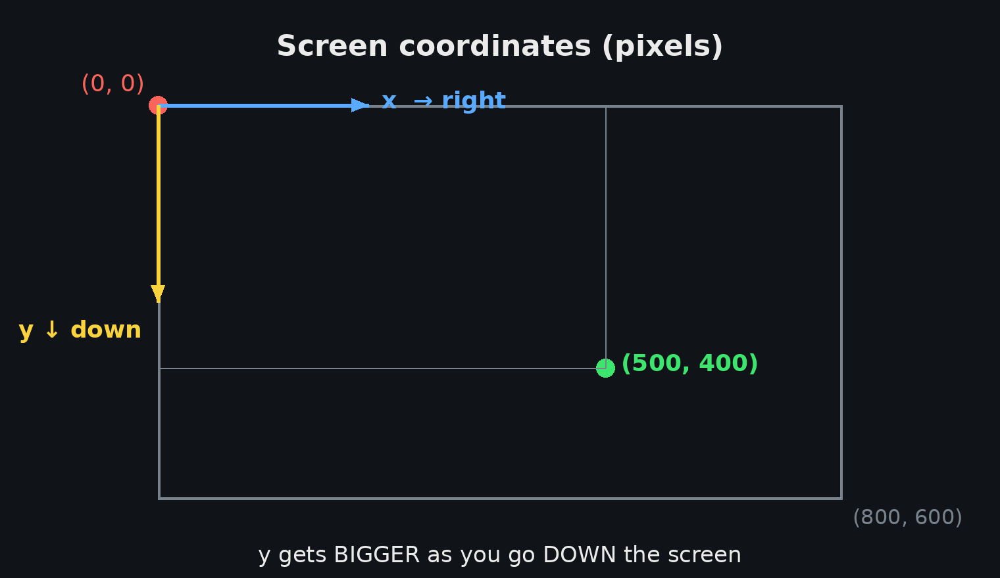
The important part of step1_line.py:
start_point = (100, 500) # near the bottom-left
end_point = (700, 100) # near the top-right
LINE_THICKNESS = 2 # how many pixels wide each line is
# where, colour, start, end, thickness in pixels
pygame.draw.line(screen, GREEN, start_point, end_point, LINE_THICKNESS)Around it is a main loop: wipe the screen, draw, show, and repeat until the window closes. Every game works this way.
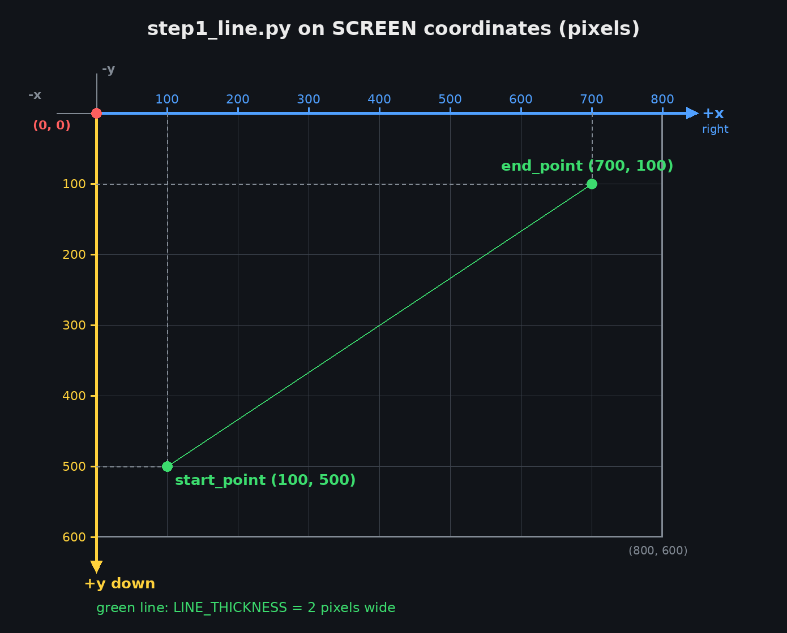
LINE_THICKNESS = 2 pixels wide; the axes, grid and labels are added here to help you read it.Full code: step1_line.py (about 65 lines)
# ======================================================================
# LESSON 1 - STEP 1: DRAW ONE LINE
# ----------------------------------------------------------------------
# Goal: open a window and draw a single green line on it.
#
# Every wireframe game (including Wireframe Warfare) is, in the end,
# just LOTS of straight lines drawn on a flat screen. So the very first
# thing to learn is how to draw ONE line.
#
# Install once: pip install pygame-ce
# Run: python step1_line.py
# Close the window to quit.
# ======================================================================
import pygame # pygame gives us a window and drawing tools
# ---- Set up the window -----------------------------------------------
pygame.init() # switch pygame on
WIDTH = 800 # window width in pixels
HEIGHT = 600 # window height in pixels
screen = pygame.display.set_mode((WIDTH, HEIGHT))
pygame.display.set_caption("Step 1 - one line")
# ---- Colours are (Red, Green, Blue), each 0 to 255 -------------------
BLACK = (0, 0, 0)
GREEN = (0, 255, 0)
# ---- How thick our lines are -------------------------------------------
# pygame.draw.line's last number is the line's thickness in pixels.
# We give it a name instead of typing 2 every time, so:
# * the code says WHAT the number means, and
# * changing this ONE line makes every line thicker or thinner.
# 2 pixels is thick enough to see clearly on an 800 x 600 window
# but thin enough to keep the "wireframe" look. Try 1 or 5.
LINE_THICKNESS = 2
# ---- The two ends of our line ----------------------------------------
# A point on the screen is (x, y), measured in pixels.
# x counts from the LEFT edge, going right.
# y counts from the TOP edge, going DOWN (this surprises everyone!).
# So (0, 0) is the top-left corner of the window.
start_point = (100, 500) # near the bottom-left
end_point = (700, 100) # near the top-right
# ---- The main loop ----------------------------------------------------
# A game keeps redrawing the screen over and over until you quit.
running = True
while running:
# 1. Check if the user clicked the window's close button.
for event in pygame.event.get():
if event.type == pygame.QUIT:
running = False
# 2. Wipe the screen black (start each picture fresh).
screen.fill(BLACK)
# 3. Draw the line: where, colour, start, end, thickness in pixels
pygame.draw.line(screen, GREEN, start_point, end_point, LINE_THICKNESS)
# 4. Show what we just drew.
pygame.display.flip()
pygame.quit()
# ----------------------------------------------------------------------
# TRY THIS:
# * Change end_point to (700, 500). Which way does the line go now?
# * Change GREEN to (255, 0, 0). What colour is the line?
# * Change LINE_THICKNESS to 10. How wide is the line now?
# * Draw a second line by copying the pygame.draw.line(...) row.
# ----------------------------------------------------------------------Q1The window is 800 × 600. Where on the screen is the point (400, 300)?
Show answer
Q2You change end_point from (700, 100) to (700, 500). Which way does the line point now?
Show answer
Part 2: A shape is points + edges 6 MIN
Writing one draw.line per line gets messy fast. Instead, we keep a shape in two lists:
- points say where the corners are. Each corner gets a number: its place in the list, starting at 0.
- edges say which corners are joined.
(3, 4)means "draw a line from point 3 to point 4".
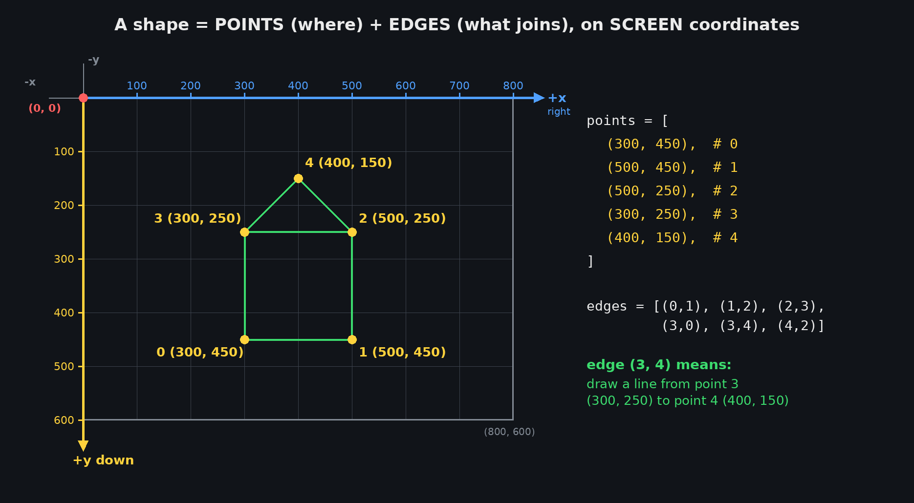
One small loop then draws any shape at all:
for edge in edges:
a = edge[0] # number of the first corner
b = edge[1] # number of the second corner
start = points[a] # (x, y) of the first corner
end = points[b] # (x, y) of the second corner
pygame.draw.line(screen, GREEN, start, end, LINE_THICKNESS)Full code: step2_polygon.py (about 90 lines)
# ======================================================================
# LESSON 1 - STEP 2: A POLYGON MADE OF "POINTS" AND "EDGES"
# ----------------------------------------------------------------------
# Goal: draw a house shape (a square with a triangle roof).
#
# Instead of writing every line by hand, we store a shape in TWO lists:
#
# points - WHERE the corners are (a list of (x, y) pairs)
# edges - WHICH corners join with a line (a list of pairs of numbers)
#
# Each edge says "join point number A to point number B".
# This is EXACTLY how Wireframe Warfare stores its shapes - there they
# are called "verts" (vertices = corners) and "edges".
#
# Run: python step2_polygon.py
# ======================================================================
import pygame
pygame.init()
WIDTH = 800
HEIGHT = 600
screen = pygame.display.set_mode((WIDTH, HEIGHT))
pygame.display.set_caption("Step 2 - points and edges")
BLACK = (0, 0, 0)
GREEN = (0, 255, 0)
YELLOW = (255, 255, 0)
# ---- How thick our lines are -------------------------------------------
# pygame.draw.line's last number is the line's thickness in pixels.
# We give it a name instead of typing 2 every time, so:
# * the code says WHAT the number means, and
# * changing this ONE line makes every line thicker or thinner.
# 2 pixels is thick enough to see clearly on an 800 x 600 window
# but thin enough to keep the "wireframe" look. Try 1 or 5.
LINE_THICKNESS = 2
# ---- The shape's corners (points) ------------------------------------
# Each corner gets a number: its position in the list, starting at 0.
points = [
(300, 450), # point 0 - bottom-left of the square
(500, 450), # point 1 - bottom-right
(500, 250), # point 2 - top-right
(300, 250), # point 3 - top-left
(400, 150), # point 4 - tip of the roof
]
# ---- Which corners are joined (edges) --------------------------------
edges = [
(0, 1), # bottom of the square
(1, 2), # right wall
(2, 3), # top of the square (the ceiling)
(3, 0), # left wall
(3, 4), # left side of the roof
(4, 2), # right side of the roof
]
# A small font so we can write the point numbers on screen.
font = pygame.font.SysFont(None, 28)
running = True
while running:
for event in pygame.event.get():
if event.type == pygame.QUIT:
running = False
screen.fill(BLACK)
# ---- Draw every edge ---------------------------------------------
# For each edge, look up its two point numbers in the points list,
# then draw a line between those two positions.
for edge in edges:
a = edge[0] # number of the first corner
b = edge[1] # number of the second corner
start = points[a] # (x, y) of the first corner
end = points[b] # (x, y) of the second corner
pygame.draw.line(screen, GREEN, start, end, LINE_THICKNESS)
# ---- Label every point with its number (just to help us learn) ---
for number in range(len(points)):
x, y = points[number]
pygame.draw.circle(screen, YELLOW, (x, y), 5)
label = font.render(str(number), True, YELLOW)
# Put the label a little to the right of, and above, the dot.
screen.blit(label, ((x + 8), (y - 22)))
pygame.display.flip()
pygame.quit()
# ----------------------------------------------------------------------
# TRY THIS:
# * Delete the edge (2, 3). What disappears?
# * Add a chimney: two new points and three new edges.
# * Move point 4 to (400, 50). What happens to the roof?
# ----------------------------------------------------------------------Q3The house has 5 points and 6 edges. Why are there more edges than points?
Show answer
Q4You delete the edge (2, 3) from the list. What disappears from the picture?
Show answer
Part 3: Going 3D 5 MIN
A 3D point just has one more number: (x, y, z).
- x is left and right (+ is right).
- y is down and up (+ is up, the opposite of the screen).
- z is distance away from you (+ is further into the screen).
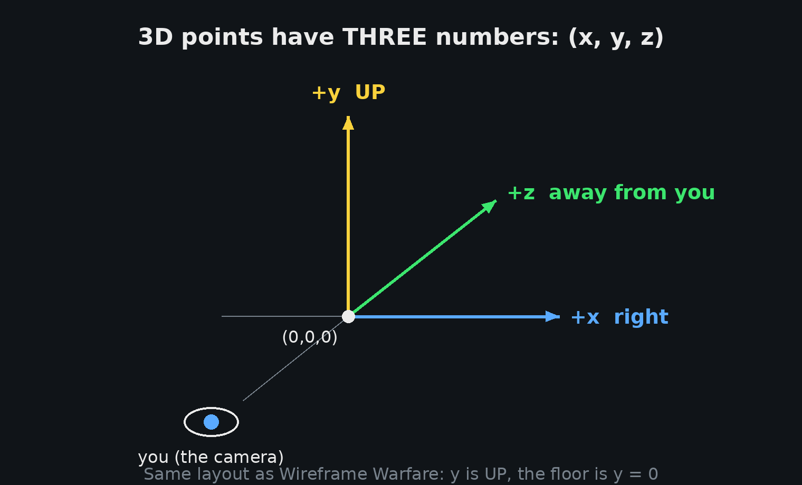
A 3D shape is still points + edges. Only the points have changed. The edges list works exactly as it did for the house.
Q5A point is at (0, 2, 10). Describe where it is in words.
Show answer
Meet the cube
For the rest of this lesson we use one 3D shape: a cube. It has 8 corners and 12 edges. Each corner is a 3D point, and each one gets a number (0 to 7), its place in the cube_points list, just like the house's corners in Part 2.
To give each corner an (x, y, z) value, we put the x, y and z axes right through the middle of the cube, so the cube's centre is (0, 0, 0). The cube is 2 units wide, so every corner is exactly 1 step from the middle along each axis: −1 or +1.
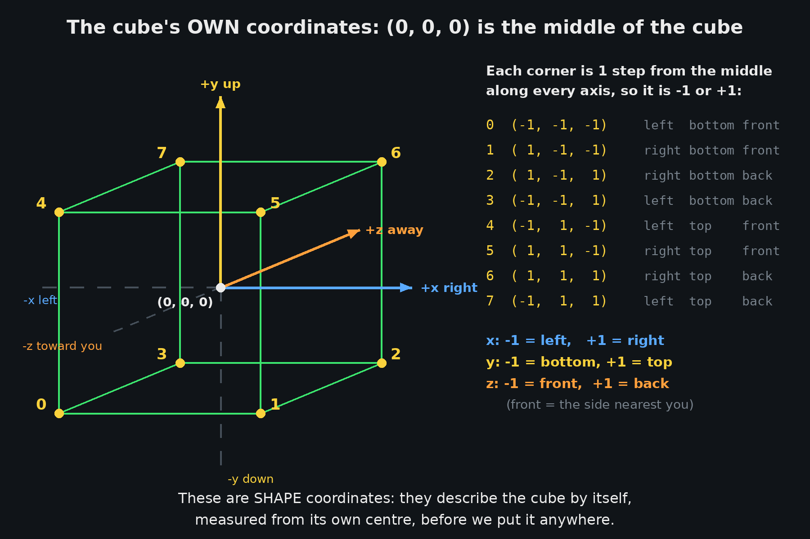
The 4 corners with z = −1 make the front face, the side nearest you. The 4 with z = +1 make the back face. To read a corner, start at the middle and take one step along each axis. For corner 5, (1, 1, −1):
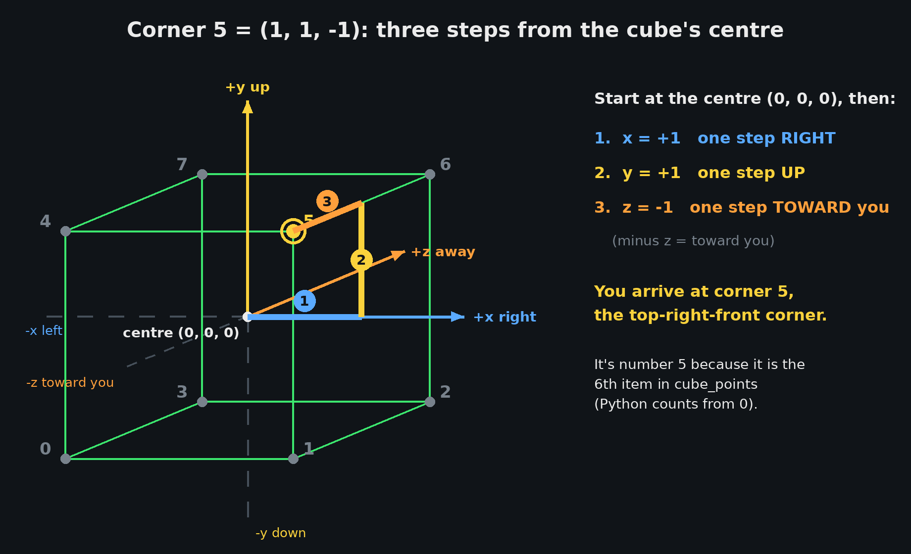
There's a problem, though. As written, the cube is centred on (0, 0, 0), which is where you are standing: the cube is around your head. So before drawing, we slide it 5 units in front of you by adding cube_distance = 5 to every corner's z.
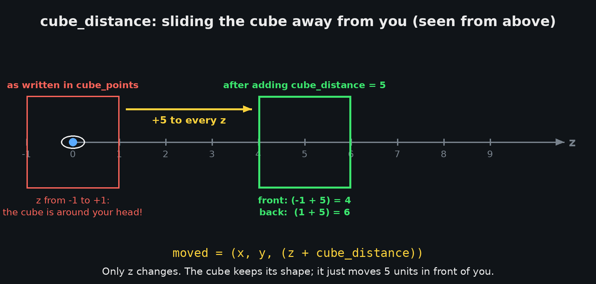
So far we have three different sets of numbers, and it's easy to mix them up. Each one measures from a different starting point:
- Shape coordinates (3D, world units) are measured from the cube's own centre, which is (0, 0, 0). A plus number means a step the way the axis arrow points (right, up, away from you). A minus number means a step the opposite way (left, down, toward you). These are what we write in
cube_points. Corner 5 is (1, 1, −1): 1 right, 1 up, 1 toward you. - World coordinates (3D, world units) are measured from you, the viewer. After adding
cube_distance, corner 5 is (1, 1, 4). - Screen coordinates (2D, pixels) are measured from the window's top-left corner, with y counting down (Part 1). Projection (Part 4) turns corner 5 into (500, 200).
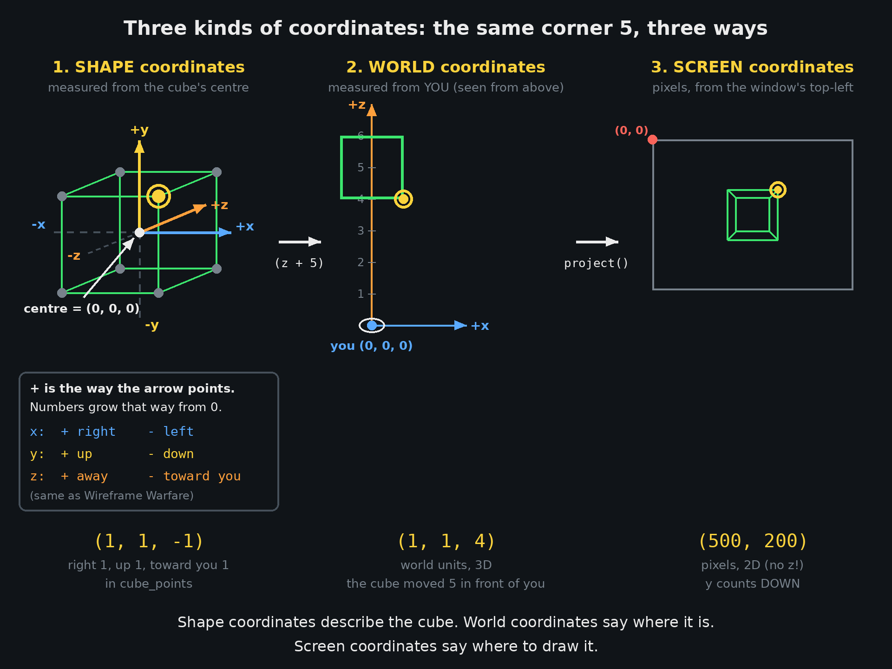
Q6Which corner is (−1, 1, 1)? Use the cube diagram, Fig 1.3.2.
Show answer
Part 4: Projection, the one big idea 15 MIN
The screen is flat, so every 3D point has to be squashed into a 2D screen point. This is called projection. Here is the whole rule. Don't worry if it looks like magic: we'll take it apart one name at a time, with a picture for each.
screen_x = CENTRE_X + ( (x * FOCAL) / z )
screen_y = CENTRE_Y - ( (y * FOCAL) / z )Every calculation in this course has brackets around each part, so you never need to remember whether Python does * before +. Work from the innermost bracket outward:
(x * FOCAL): scale the point by the lens zoom.( (x * FOCAL) / z ): shrink it by its distance.CENTRE_X + ( ... ): start from the middle of the window.
Every name in the rule
Table 1.4.1Every name in the projection rule
| Name | What it means | Measured in | Our value | Why this value |
|---|---|---|---|---|
x, y | How far right and how far up the 3D point is | world units | from the shape | The cube's corners use −1 and +1 so the sums stay easy. |
z | How far in front of you the point is | world units | 4 to 6 | The cube sits at distance 5 and is 2 deep, so its faces are at 4 and 6. |
CENTRE_X | The middle of the window, left to right | pixels | (800 / 2) = 400 | Half the window width. Not chosen: it follows from the window size. |
CENTRE_Y | The middle of the window, top to bottom | pixels | (600 / 2) = 300 | Half the window height. |
FOCAL | How far your eye is from the screen. This is the zoom. | pixels | 400 | Half the window width. It gives a 90° view and draws our cube 200 px wide (see 4.6). |
screen_x, screen_y | Where the point is drawn on the window | pixels | the answer | Worked out by the rule. |
4.1 The centre: CENTRE_X and CENTRE_Y
Imagine you're looking through the window straight ahead. The spot you are looking at is the exact middle of the window. Anything dead ahead of you (x = 0 and y = 0) should be drawn there, however far away it is.
The window is 800 pixels wide and 600 tall, so the middle is CENTRE_X = (800 / 2) = 400 and CENTRE_Y = (600 / 2) = 300. These numbers aren't picked by taste. If you made the window 1000 wide, CENTRE_X would become (1000 / 2) = 500.
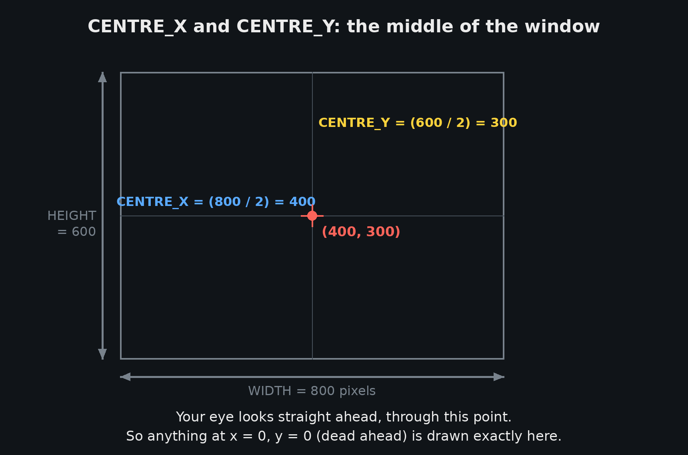
4.2 The offset: how far from the centre
Every point is drawn somewhere relative to the centre: so many pixels right (or left) and so many pixels up (or down). We call that distance the offset. The rule is really just:
screen_x = CENTRE_X + (offset to the right)
screen_y = CENTRE_Y - (offset upward)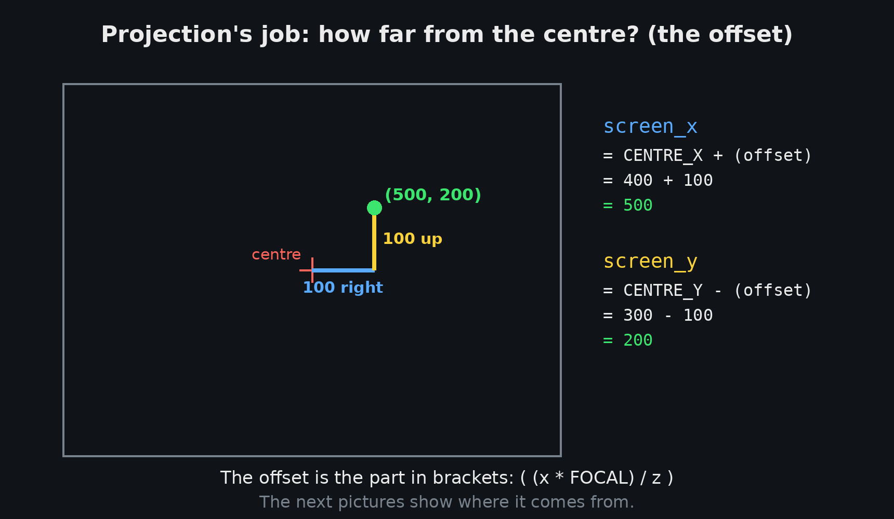
So the only hard part is the offset. The next three pictures, Fig 1.4.4 to Fig 1.4.7, explain it.
4.3 z: how far away
z is the distance in front of you, in world units. A world unit can be anything you like; think of it as one metre. Our cube is 2 units wide and its centre is 5 units away, so its front face is at (5 - 1) = 4 and its back face at (5 + 1) = 6.
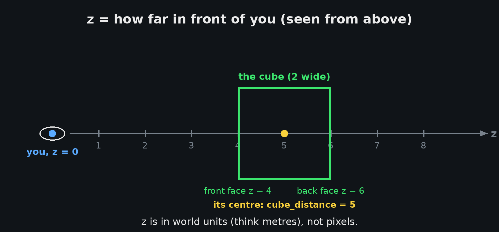
4.4 FOCAL: where the screen is
Pretend the window is a sheet of glass held in front of your eye. FOCAL is the distance from your eye to that glass, measured in pixels. To see where a point lands on the glass, draw a straight line from your eye to the point and mark where it crosses the glass.
That makes two triangles with the same shape: a big one out to the point, and a small one up to the glass. Because they're the same shape, their sides are in the same ratio:
( offset / FOCAL ) = ( y / z )
so offset = ( (y * FOCAL) / z )This is the most important idea of Part 4. Every 3D point in this course reaches the screen through this one rule. It works the same way for x, seen from above (Fig 1.4.6 below).
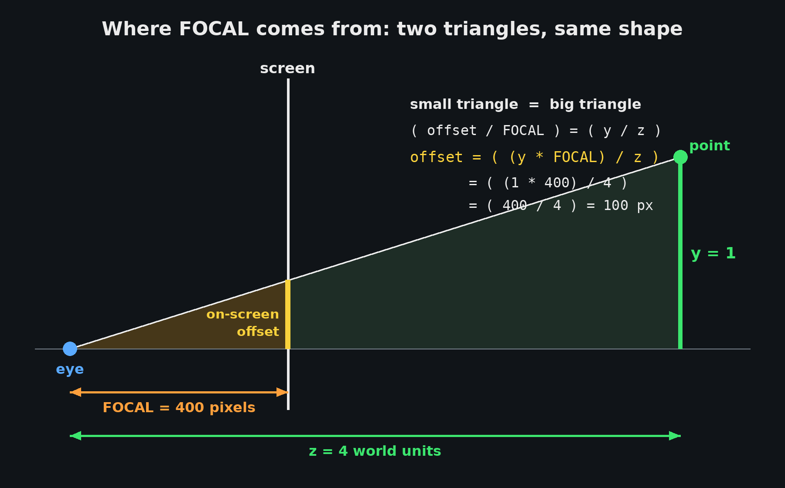
Notice the units: y and z are both world units, so (y / z) has no units at all. Multiplying by FOCAL, which is in pixels, turns it into pixels. That's why the answer can be added to the centre of the window, which is also in pixels.
Now x. Fig 1.4.5 is a side view, so it only shows y (up and down). To work out x (left and right), look at the same eye, glass and point from above. From up there, across the page is x and up the page is z (away from you). The sight line from your eye to the point makes exactly the same two triangles, with x where y was:
( offset_x / FOCAL ) = ( x / z )
so offset_x = ( (x * FOCAL) / z )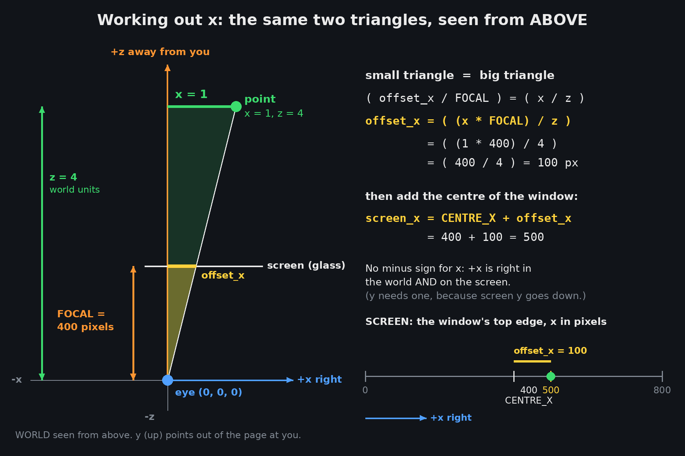
So the two rules are twins. Work them both out for the point (1, 1, 4), one bracket at a time:
offset_x = ( (x * FOCAL) / z ) = ( (1 * 400) / 4 ) = ( 400 / 4 ) = 100 px
offset_y = ( (y * FOCAL) / z ) = ( (1 * 400) / 4 ) = ( 400 / 4 ) = 100 px
screen_x = ( CENTRE_X + offset_x ) = ( 400 + 100 ) = 500
screen_y = ( CENTRE_Y - offset_y ) = ( 300 - 100 ) = 200The only difference is the sign. +x means right in the world and on the screen, so x adds. +y means up in the world but screen y counts down, so y subtracts. Section 4.7 shows what goes wrong without that minus.
4.5 Dividing by z: far things look smaller
Keep FOCAL at 400 and take the point (1, 1, z). As z gets bigger, the offset gets smaller, so the point slides toward the centre.
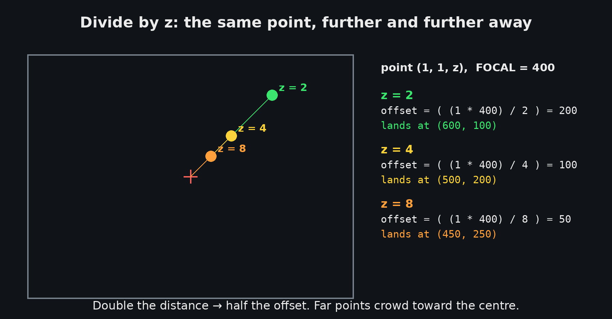
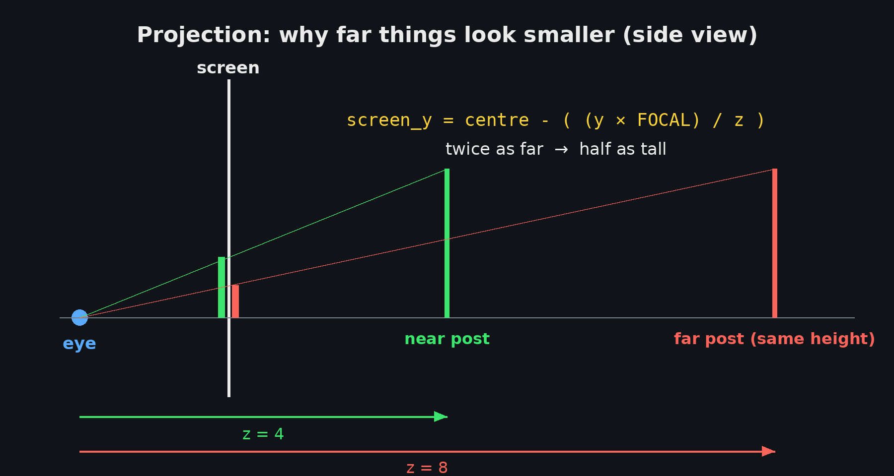
4.6 FOCAL is the zoom, and why 400
"Zoom" and FOCAL are the same thing. There's no separate zoom variable. The easiest way to see what it does is to measure something. In Fig 1.4.9 below, the cube stays exactly where it is (distance 5), and only FOCAL changes. Look at how many pixels wide the cube's front face is drawn:
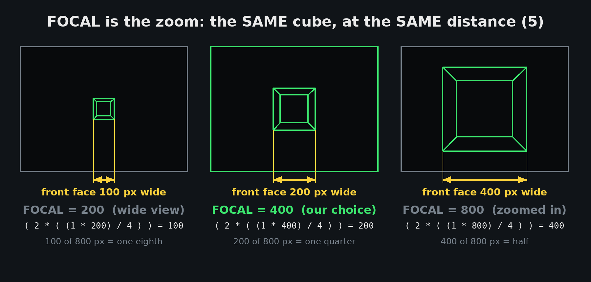
The width comes straight from the rule. The front face runs from x = −1 to x = +1 at z = 4, so its width on screen is twice the offset of one corner:
front face width = ( 2 * ( (1 * FOCAL) / 4 ) )
FOCAL 200: ( 2 * ( (1 * 200) / 4 ) ) = ( 2 * 50 ) = 100 px
FOCAL 400: ( 2 * ( (1 * 400) / 4 ) ) = ( 2 * 100 ) = 200 px
FOCAL 800: ( 2 * ( (1 * 800) / 4 ) ) = ( 2 * 200 ) = 400 pxWhy does this happen? Look from above (Fig 1.4.10). The glass (the screen) is always 800 pixels wide, but FOCAL moves it nearer to or further from your eye. Draw lines from your eye to the two front corners of the cube. Where they cross the glass (the yellow strip) is how much of the screen the cube covers.
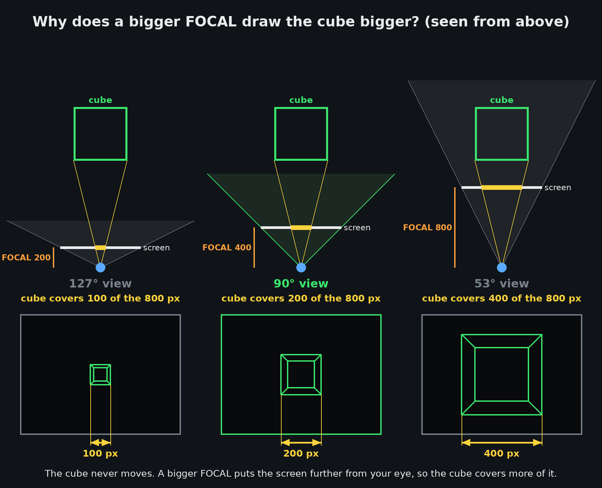
The shaded triangle shows how much of the world fits through the window, called the field of view. A close glass shows a lot of the world (127°), so each thing gets fewer pixels. A far glass shows less of the world (53°), so each thing gets more pixels.
So why 400? With FOCAL = (800 / 2) = 400, the glass is as far from your eye as it is wide on each side, so you see 45° to the left and 45° to the right: a 90° view, a bit like a phone camera. In our scene that draws the cube 200 pixels wide, one quarter of the window. That's big enough to see clearly and leaves room to move it around. Wireframe Warfare starts from the angle instead: it picks a 75° view and works FOCAL out from it, which gives about 521 for an 800-wide window. We'll do that in a later lesson. For now, 400 keeps the sums easy.
4.7 The minus sign
In 3D, +y is up. On the screen, y counts down from the top (Part 1). So a point that is up in 3D needs a smaller screen_y. That's why the y line uses minus: CENTRE_Y - ( ... ).
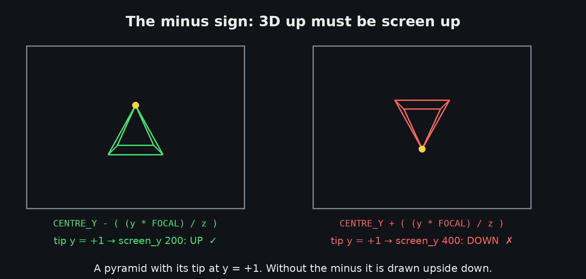
4.8 Put it all together: follow one corner
Now take one corner of the cube and follow it all the way to the screen, one bracket at a time. We'll use corner 5, the top-right-front corner from Part 3. Its shape coordinates are (1, 1, −1). First we slide it 5 units away to get its world coordinates, (1, 1, 4). Then the projection rule gives its screen coordinates:
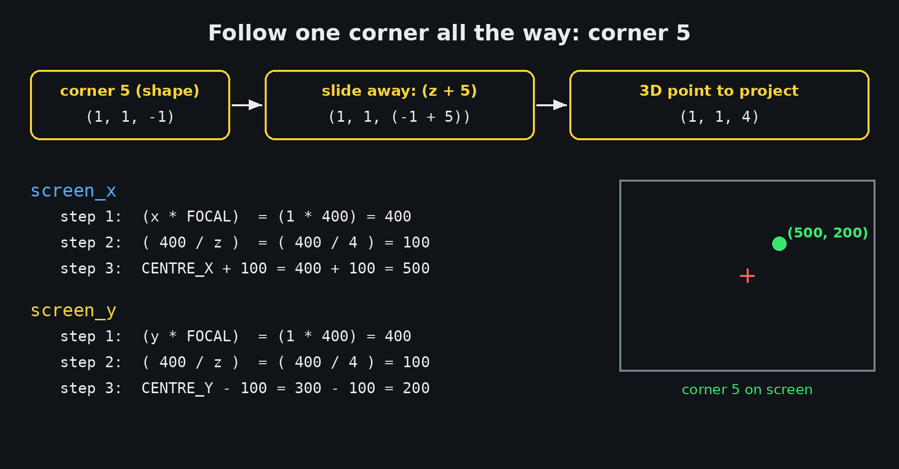
screen_x = 400 + ( (1 * 400) / 4 )
= 400 + ( 400 / 4 )
= 400 + 100
= 500
screen_y = 300 - ( (1 * 400) / 4 )
= 300 - ( 400 / 4 )
= 300 - 100
= 200So corner 5 lands at (500, 200): 100 pixels right of the centre and 100 pixels up. In code, the whole rule is one small function:
def project(point_3d):
x, y, z = point_3d
screen_x = CENTRE_X + ( (x * FOCAL) / z ) # divide by z: far = nearer the centre
screen_y = CENTRE_Y - ( (y * FOCAL) / z ) # minus: 3D up is screen up
return (screen_x, screen_y)Q7Using the same numbers (CENTRE 400, 300 and FOCAL 400), where does (1, 1, 8) land? Compare it with (1, 1, 4).
Show answer
screen_x = 400 + ( (1 * 400) / 8 ) = 400 + 50 = 450
screen_y = 300 - ( (1 * 400) / 8 ) = 300 - 50 = 250So (450, 250). It is twice as far away, so it lands only half as far from the centre: 50 pixels instead of 100.
Q8You change the window to 1000 × 800. What are the new CENTRE_X and CENTRE_Y? Where does a point dead ahead, (0, 0, 5), land?
Show answer
CENTRE_X = (1000 / 2) = 500
CENTRE_Y = (800 / 2) = 400A point dead ahead has offset ( (0 * FOCAL) / 5 ) = 0, so it lands right on the centre, (500, 400).
Q9Change FOCAL to 800. Where does corner 5, now at (1, 1, 4), land? Did the cube get bigger or smaller?
Show answer
screen_x = 400 + ( (1 * 800) / 4 ) = 400 + 200 = 600
screen_y = 300 - ( (1 * 800) / 4 ) = 300 - 200 = 100(600, 100). The offset doubled from 100 to 200, so the cube is drawn twice as wide (400 px instead of 200 px): we zoomed in.
Q10What would go wrong if z were 0? What about a negative z?
Show answer
Part 5: The cube 5 MIN
Now put it all together. You met the cube's 8 corners in Part 3, and you followed corner 5 to the screen in 4.8. The program does exactly the same for every corner: shape coordinates from cube_points, then add cube_distance to get world coordinates, then project() to get screen pixels.
In the code, that recipe looks like this:
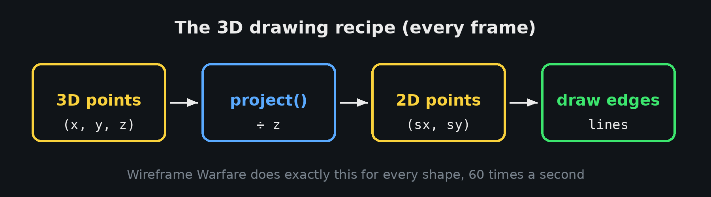
# Step A: work out where every corner lands on the screen
screen_points = []
for p in cube_points:
x, y, z = p
moved = (x, y, (z + cube_distance)) # slide the cube away from us
screen_points.append(project(moved)) # 3D -> 2D
# Step B: draw the edges, exactly like the house
for a, b in cube_edges:
pygame.draw.line(screen, GREEN, screen_points[a], screen_points[b], LINE_THICKNESS)Do we project each edge? No. Every edge needs two points, so it's natural to think each edge must be projected on its own. But Step A projects each of the 8 corners once and keeps the answers in the screen_points list. Step B never calls project(): each edge is just a pair of corner numbers, like (4, 5), and it looks up those two answers in the list by their numbers. Corner 5 is the end of 3 edges, (4, 5), (5, 6) and (1, 5), but it is worked out only once.
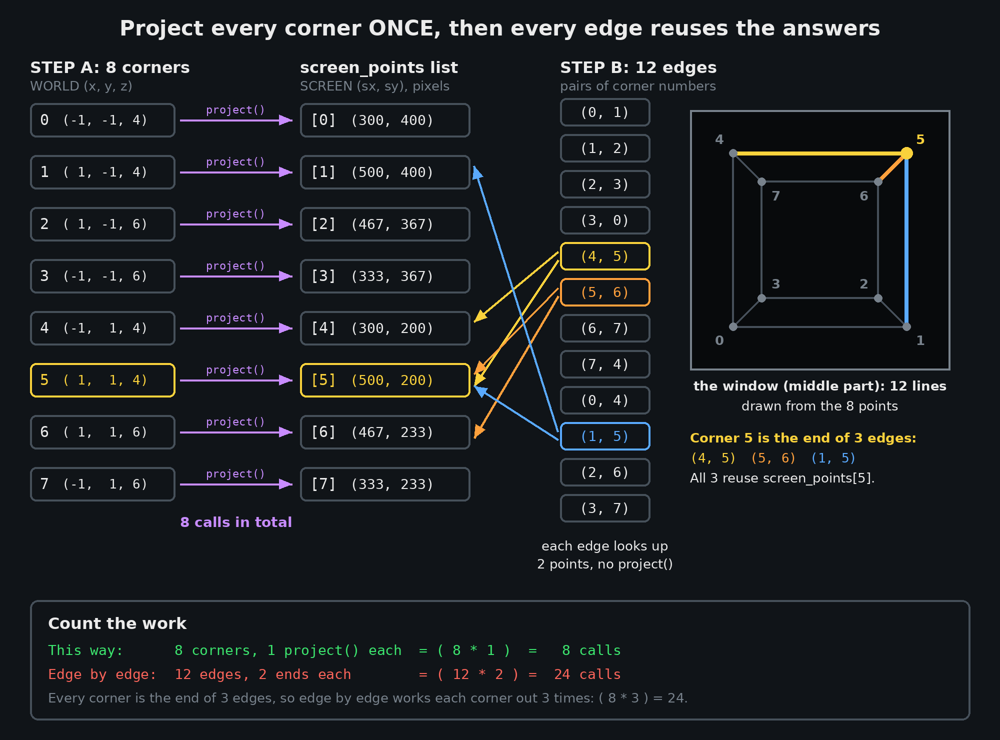
screen_points. Step B's edges only look up two answers each. That's ( 8 * 1 ) = 8 calls to project(). Projecting edge by edge would take ( 12 * 2 ) = 24, because every corner is the end of 3 edges and would be worked out 3 times.Panels: 1.5.3a (left) STEP A: 8 corners, project() once each · 1.5.3b (middle) STEP B: 12 edges look up 2 points each · 1.5.3c (right) the window: 12 lines from 8 points · 1.5.3d (bottom) count the work: 8 calls, not 24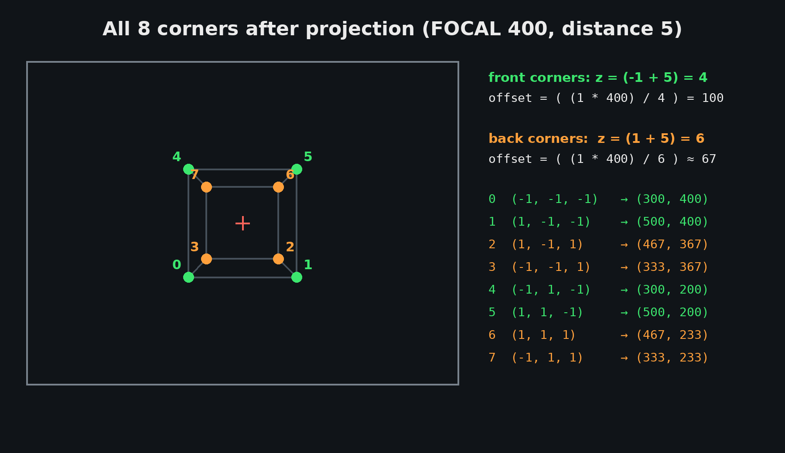
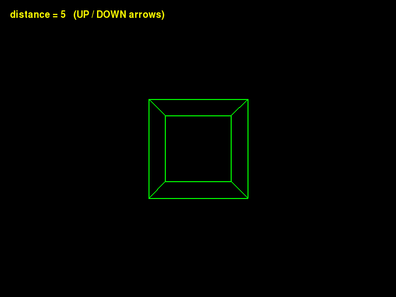
Full code: step3_cube.py (about 150 lines)
# ======================================================================
# LESSON 1 - STEP 3: A 3D CUBE ON A FLAT SCREEN
# ----------------------------------------------------------------------
# Goal: describe a cube in 3D, then draw it on the 2D screen.
#
# Three new ideas:
#
# 1. A 3D point has THREE numbers: (x, y, z)
# x = left / right (+ is right)
# y = down / up (+ is UP - the opposite of the screen!)
# z = distance away (+ is further into the screen)
# Wireframe Warfare uses this same layout.
#
# 2. A 3D shape is still just points + edges (like the house in step 2),
# only now each point has a z.
#
# 3. PROJECTION turns a 3D point into a 2D screen point. The rule:
#
# screen_x = centre_x + ( (x * FOCAL) / z )
# screen_y = centre_y - ( (y * FOCAL) / z )
#
# Read the brackets from the INSIDE out:
# first (x * FOCAL) - scale the point up by the lens zoom
# then ( ... / z) - shrink it by its distance
# last centre_x + ( ... ) - move it to the middle of the window
#
# BRACKETS RULE FOR THIS COURSE: we put brackets around every part
# of every calculation, so you never have to remember which of
# + - * / Python does first. The brackets show the order.
#
# Dividing by z is the whole trick: the further away something is
# (bigger z), the closer to the centre it lands - so it looks smaller.
# That is "perspective", and it is how your eyes see the world too.
#
# Controls: UP arrow = push the cube away, DOWN arrow = pull it closer
# Run: python step3_cube.py
# ======================================================================
import pygame
pygame.init()
WIDTH = 800
HEIGHT = 600
screen = pygame.display.set_mode((WIDTH, HEIGHT))
pygame.display.set_caption("Step 3 - a 3D cube")
clock = pygame.time.Clock() # used to slow the loop to 60 frames/sec
BLACK = (0, 0, 0)
GREEN = (0, 255, 0)
YELLOW = (255, 255, 0)
# ---- How thick our lines are -------------------------------------------
# pygame.draw.line's last number is the line's thickness in pixels.
# We give it a name instead of typing 2 every time, so:
# * the code says WHAT the number means, and
# * changing this ONE line makes every line thicker or thinner.
# 2 pixels is thick enough to see clearly on an 800 x 600 window
# but thin enough to keep the "wireframe" look. Try 1 or 5.
LINE_THICKNESS = 2
# The middle of the screen. In 3D, (x=0, y=0) appears here.
CENTRE_X = (WIDTH / 2) # (800 / 2) = 400
CENTRE_Y = (HEIGHT / 2) # (600 / 2) = 300
# FOCAL is like the zoom on a camera lens. Bigger = more zoomed in.
FOCAL = 400
# ---- The cube's 8 corners, in 3D -------------------------------------
# These are SHAPE coordinates: measured from the cube's OWN centre.
# The x, y and z axes go right through the middle of the cube, so the
# middle is (0, 0, 0) and every corner is 1 step away: -1 or +1.
# (Later we add cube_distance to turn them into WORLD coordinates,
# measured from you, and project() turns those into SCREEN pixels.)
# The cube is 2 units wide.
# Bottom 4 corners have y = -1, top 4 have y = +1.
# Front 4 corners have z = -1, back 4 have z = +1.
cube_points = [
(-1, -1, -1), # 0 bottom-left-front
( 1, -1, -1), # 1 bottom-right-front
( 1, -1, 1), # 2 bottom-right-back
(-1, -1, 1), # 3 bottom-left-back
(-1, 1, -1), # 4 top-left-front
( 1, 1, -1), # 5 top-right-front
( 1, 1, 1), # 6 top-right-back
(-1, 1, 1), # 7 top-left-back
]
# ---- The cube's 12 edges ---------------------------------------------
cube_edges = [
(0, 1), (1, 2), (2, 3), (3, 0), # the 4 edges of the bottom square
(4, 5), (5, 6), (6, 7), (7, 4), # the 4 edges of the top square
(0, 4), (1, 5), (2, 6), (3, 7), # the 4 upright edges joining them
]
# ---- Where the cube is -----------------------------------------------
# We are standing at z = 0 looking along +z. The cube starts 5 units away.
cube_distance = 5
def project(point_3d):
"""Turn one 3D point (x, y, z) into a 2D screen point (sx, sy).
This is the most important function in all 3D graphics.
Wireframe Warfare has the same one - also called project().
"""
x, y, z = point_3d
# Divide by z: far things move toward the centre (look smaller).
# step 1: (x * FOCAL) scale by the lens zoom
# step 2: ((x * FOCAL) / z) shrink by the distance
# step 3: CENTRE_X + (...) start from the middle of the window
screen_x = CENTRE_X + ( (x * FOCAL) / z )
# Same steps for y, but MINUS because 3D y goes UP
# while screen y goes DOWN.
screen_y = CENTRE_Y - ( (y * FOCAL) / z )
return (screen_x, screen_y)
running = True
while running:
for event in pygame.event.get():
if event.type == pygame.QUIT:
running = False
# ---- Keys move the cube nearer / further -------------------------
keys = pygame.key.get_pressed()
if keys[pygame.K_UP]:
cube_distance = (cube_distance + 0.05)
if keys[pygame.K_DOWN]:
cube_distance = (cube_distance - 0.05)
if cube_distance < 2: # don't let it come through the screen
cube_distance = 2 # (z must stay above 0 or we'd divide by 0)
screen.fill(BLACK)
# ---- Step A: work out where every corner lands on the screen -----
screen_points = [] # will hold 8 (sx, sy) pairs
for p in cube_points:
x, y, z = p
moved = (x, y, (z + cube_distance)) # slide the cube away from us
screen_points.append(project(moved)) # 3D -> 2D
# ---- Step B: draw the edges, exactly like the house in step 2 ----
for a, b in cube_edges:
pygame.draw.line(screen, GREEN, screen_points[a], screen_points[b], LINE_THICKNESS)
# A little text so we know the distance.
font = pygame.font.SysFont(None, 28)
text = "distance = " + str(round(cube_distance, 1)) + " (UP / DOWN arrows)"
screen.blit(font.render(text, True, YELLOW), (20, 20))
pygame.display.flip()
clock.tick(60) # at most 60 pictures per second
pygame.quit()
# ----------------------------------------------------------------------
# TRY THIS:
# * Change FOCAL to 200, then 800. What does it do?
# * Change the 1s in cube_points to 2s. What happens?
# * Add 3 to every x (moved = ((x + 3), y, (z + cube_distance))). Where does it go?
# * Turn the cube into a pyramid: 4 bottom corners + 1 top point (0, 1, 0).
# ----------------------------------------------------------------------Q11Looking head-on, the cube looks like a small square inside a big square. Which square is the back of the cube, and why is it smaller?
Show answer
Q12Why do we add cube_distance to z, and not just write the cube's corners with big z values?
Show answer
Wrap up 2 MIN
1. A screen is a grid of pixels, (0, 0) top-left, y down.
2. A wireframe shape is a list of points plus a list of edges.
3. Projection turns (x, y, z) into a screen point with CENTRE + ( (x * FOCAL) / z ), so far things look smaller.
4. Brackets around every part of a calculation show the order. Work from the inside out.
Q13Final check: describe in your own words the four steps to draw a 3D wireframe shape.
Show answer
Practice before Lesson 2
- Turn the cube into a pyramid: 4 bottom corners plus one top point at (0, 1, 0), and 8 edges.
- Move the cube to the right: change
movedto((x + 3), y, (z + cube_distance)). Notice you can now see its side. - Try FOCAL = 200 and FOCAL = 800 and describe the difference.
Next time: Lesson 2, spinning
Right now the cube only faces us. In Lesson 2 we'll write a small rotate() function that turns every point around the centre a little each frame, so the cube spins. It slots in right before project(), and nothing else in today's code has to change.
Files
Download the code for this lesson (right-click a file and choose Save link as):
code/step1_line.py: one linecode/step2_polygon.py: the house, points and edgescode/step3_cube.py: the 3D cube with arrow-key distanceimages/: every diagram on this page as a PNG- Figure index: every figure and table in the course, with its number. Numbers read
Fig lesson.part.figure, plus a letter for one panel of a picture (for exampleFig 3.4.2b).